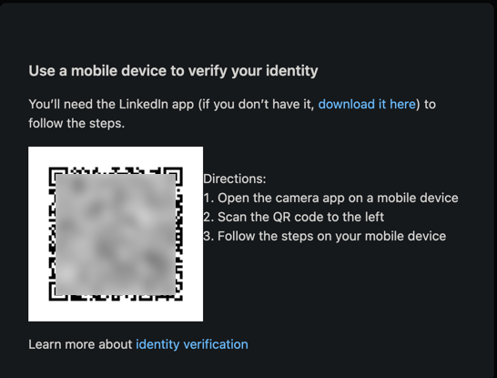
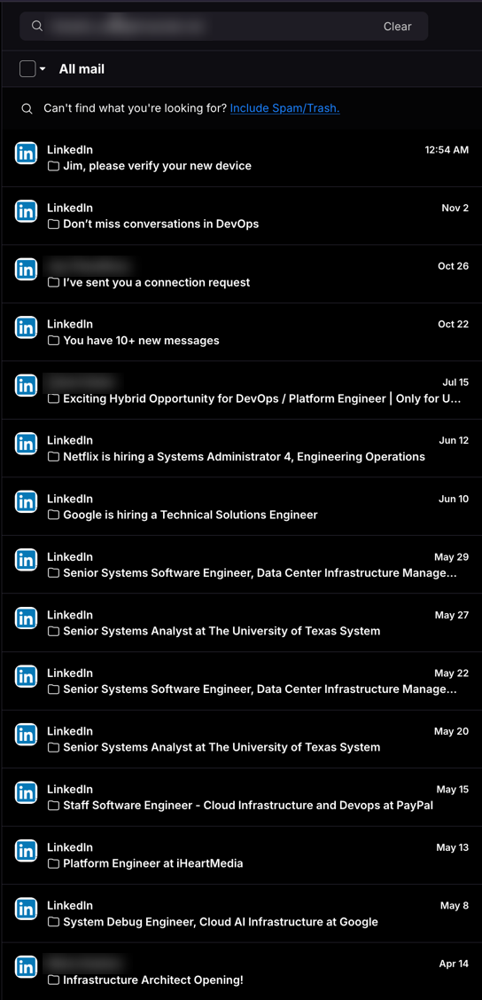
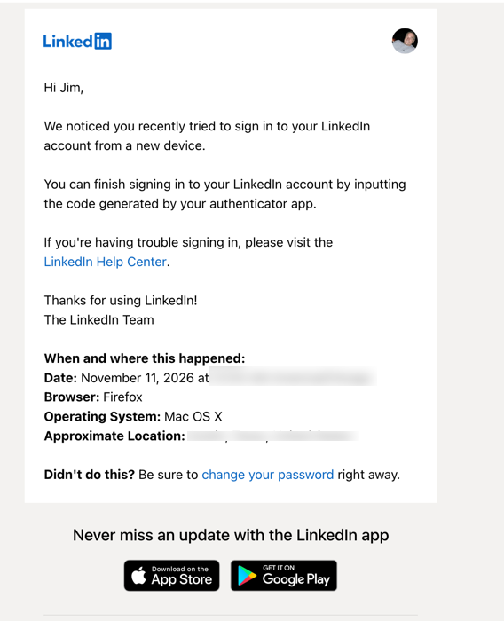

Why I'm not on LinkedIn.
TL;DR
- Went back to LinkedIn after years away.
- It demanded a government ID and a selfie.
- All I wanted was to edit a stale profile.
- No deal. This page is the profile now.
What happened
- Hadn't logged in for years.
- Went back to update a profile from a few jobs ago.
- Typed the correct password.
- Got this:

Fair point
- The platform is overrun with bots, fake recruiters, and scam accounts.
- A dormant account logging in from a new device looks stolen.
- Making a robot prove it's a person is a reasonable goal.
For the record
I have a job. It keeps me plenty busy. I'm not looking. This is about how much personal information a company thinks it's owed, not a career move.
Meanwhile, in my inbox
- I use a separate address for every site. This one belongs to LinkedIn alone.
- 15 emails since April. That's just the first screen.
- 9 are job alerts. 2 more are recruiter pitches.
- They're sure I'm job hunting. I'm not.

The verification email
- The newest one landed right after my login: "Jim, please verify your new device."
- No code. No link. It says to use an authenticator app.
- The footer: "Never miss an update with the LinkedIn app."
- Every road leads to their app.

Why I said no
- They had better options. I knew the password. They have my email. Either one can carry a one-time code.
- They emailed me anyway. Not with a code. With a pointer back to an app.
- The ask was huge. Install their app. Photograph a government ID. Hand over a face scan.
- The reward was tiny. Edit a few lines of text on a feed of posts about what someone's toddler taught them about B2B sales.
- You can't rotate your face. A leaked password gets reset. A leaked ID and a biometric don't.
The catch
Some employers require a LinkedIn account for compliance training. Done right, that runs through company single sign-on and never touches a personal profile. Done cheaply, it means a personal account, and now a government ID and a face scan just to log in. If I'm ever asked for those, I'll say no. Then the requirement and the refusal are both on the record, and the training that was supposed to be simple isn't.
So this page is the profile now. Static HTML, source on GitHub. Nobody has to prove they're human to read it.